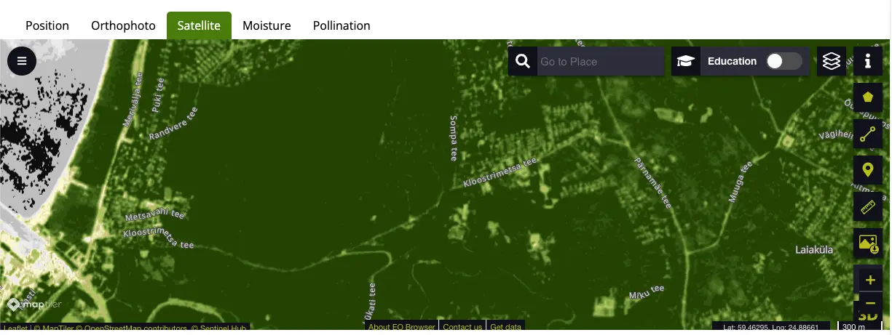
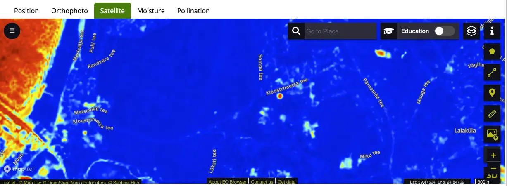
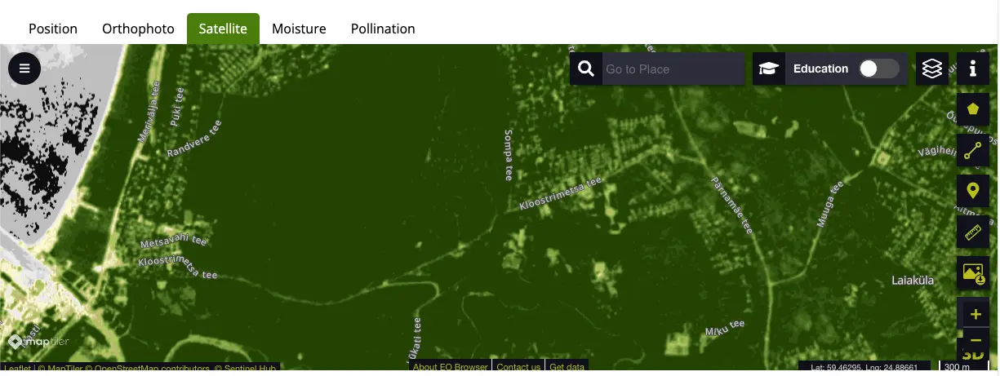
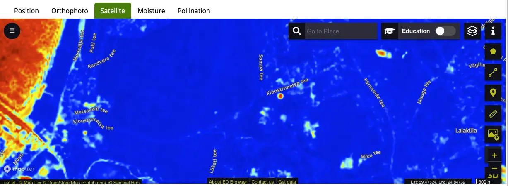
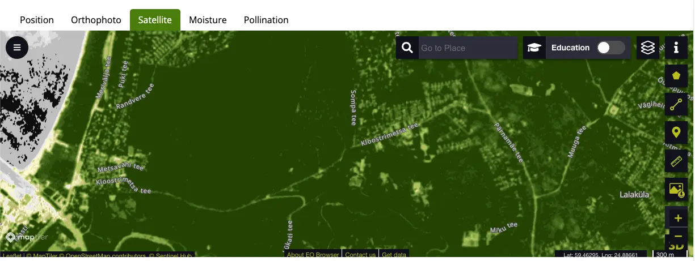
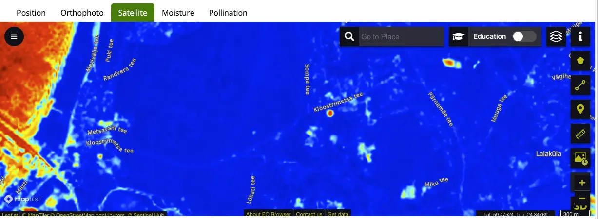

How does it work?
Count bees
Measure precise colony size and predict potential swarming

Model beehives
It's difficult to observe and record all colony information using pen and paper while in the
field. Model hives to remember where to take action and why
Classify beecomb
Take a photo of honeycombs to get detection of cells and ratio of resources.
Balancing nectar and pollen between colonies can prevent starvation

Queenspotting
Finding a queen in a bustling metropolis to determine if the colony has a future can be
quite challenging.
We can surprise you and find two

Inspections
Take snapshot of the beehive state to track colony development over time

AI beekeeper
Given all of the hive context, get a one-button advice from a large language model on the
next steps

Frame notes
Use ipad pencil or mouse to draw on top of the frame to highlight important regions
Environment
Gather context of plants and weather around your apiary. Use satellite maps to know better
pollinateable areas.
 



Varroa mites (beta)
Detect and count varroa mites infesting your bees without the need of killing bees with
alcohol washing test

Count bees
Measure precise colony size and predict potential swarming
Model beehives
It's difficult to observe and record all colony information using pen and paper while in the field. Model hives to remember where to take action and why
Classify beecomb
Take a photo of honeycombs to get detection of cells and ratio of resources. Balancing nectar and pollen between colonies can prevent starvation
Queenspotting
Finding a queen in a bustling metropolis to determine if the colony has a future can be quite challenging. We can surprise you and find two
Inspections
Take snapshot of the beehive state to track colony development over time
AI beekeeper
Given all of the hive context, get a one-button advice from a large language model on the next steps
Frame notes
Use ipad pencil or mouse to draw on top of the frame to highlight important regions
Environment
Gather context of plants and weather around your apiary. Use satellite maps to know better pollinateable areas.


Varroa mites (beta)
Detect and count varroa mites infesting your bees without the need of killing bees with alcohol washing test